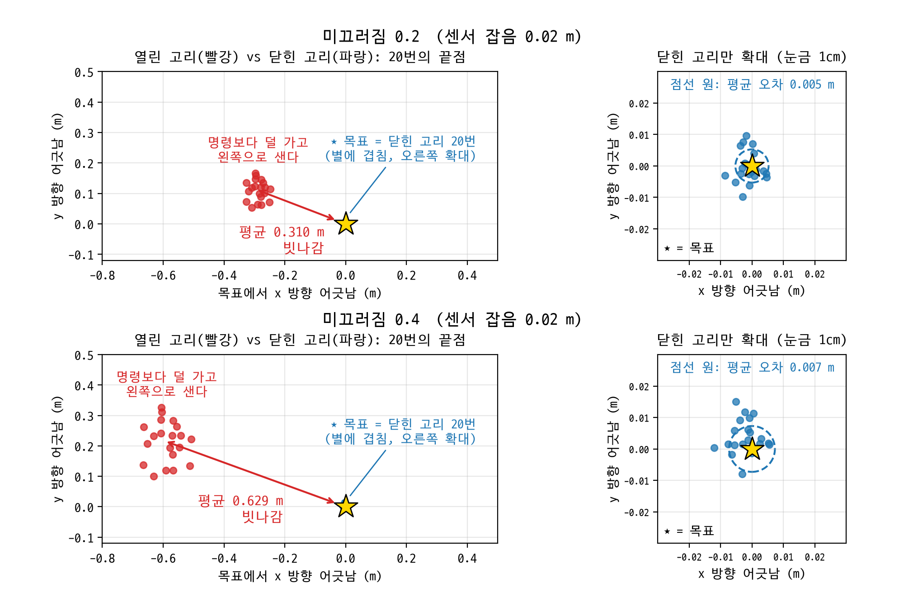

덜 간 차를 다시 보고 다음 움직임을 고칩니다. 피드백이 무엇을 바꾸는지 끝점 그림으로 봅니다.
덜 갔다는 정보를 다음 걸음에 씁니다
차를 한 번 밀었는데 예상보다 덜 갔다고 합시다. 도착선은 그대로입니다. 차가 지금 어디까지 갔는지 다시 보고 다음 밀기를 고치는 것이 피드백입니다.
덜 간 거리와 교안의 반복 실험값
목표 x=1m, 현재 진짜 x=0m라고 합시다. 0.1m를 명령했는데 미끄러져 0.08m만 갔습니다. 열린 고리는 여전히 예정된 다음 0.1m 명령을 보냅니다. 닫힌 고리는 새로 잰 0.08m를 사용해 남은 거리 0.92m를 계산합니다. 덜 간 만큼 다음 명령을 다시 만드는 것이지 미끄러짐 자체가 사라진 것이 아닙니다.
미끄러짐 0.2, 위치 잡음 표준편차 0.02m 조건에서 20번의 최종 거리 평균은 열린 고리 0.310m, 닫힌 고리 0.005m입니다. 이 컴퓨터에서 b04_slip_noise.py를 돌려 얻은 값이고(13쪽 실행 블록) 강의 슬라이드의 값과 같습니다. 이 난수열·모델의 결과이며 일반적인 오차 보장은 아닙니다.
경로와 끝점은 서로 다른 정보를 줍니다


끝점의 거리와 평균 읽기
각 점은 한 번의 완성된 실행입니다. 한 점에서 다음 점으로 로봇이 움직인 경로가 아닙니다. 목표까지 남은 거리는 norm(목표−진짜_위치)이며 x오차 하나와도 다릅니다. 센서 잡음이 2cm인데 최종 평균 거리가 5mm일 수는 있지만, 특정 한 번의 측정이 더 정확해졌다는 뜻은 아닙니다.
01-what-is-a-robot\b05_paths_plot.py · 읽을 줄 10–40 · 그림 파일을 저장하므로 임시 폴더에서 돌립니다
cd $env:TEMP
C:\code\src\robo\.venv\Scripts\python.exe C:\code\src\robo\vol3\01-what-is-a-robot\b05_paths_plot.py열린 고리 끝: [1.716 1.084] / 닫힌 고리 끝: [2. 0.997]
저장: open_closed.png한 번의 실행에서 열린 고리 끝과 닫힌 고리 끝을 비교합니다(미끄러짐 0.2, 잡음 0.02m). 그림 open_closed.png는 실행한 폴더에 저장됩니다.
이 쪽의 그림을 만든 파일(같은 폴더, 실행하면 그림 PNG를 저장): 01-what-is-a-robot\s10_endpoints_scatter.py
도착 판단은 로봇이 아는 값으로 합니다
센서값은 한 장의 메모입니다. 그 메모로 명령을 정하고 한 걸음 간 뒤에도 메모 내용은 그대로입니다. 아래 마지막 줄은 움직이기 전 메모로 계산한 거리를 돌려줍니다.
센서 메모를 사용하는 코드
잰_위치 = self.감지()
속도_명령 = self.판단(잰_위치)
self.행동(속도_명령)
return float(np.linalg.norm(self.목표 - 잰_위치))self.감지()는 센서값, self.판단(...)은 속도 명령, self.행동(...)은 한 주기의 물리적 이동을 맡습니다. 마지막 반환값은 이번 행동 뒤의 진짜 거리도 아니고 새로 잰 거리도 아닙니다. 방금 판단에 사용한 측정으로 계산한 거리입니다.
b06_loop_class.py를 돌리면 잰 거리가 5cm 안일 때 55박자, 5.5초 만에 멈추고 진짜 남은 거리는 3.9cm입니다(12쪽 실행 블록, 슬라이드와 같은 값). “도착”이라는 코드 조건과 진짜 위치의 차이를 함께 읽어야 합니다. 실물용 고리라면 최대 시간·센서 이상·정지 조건도 별도로 설계합니다.
01-what-is-a-robot\b06_loop_class.py · 읽을 줄 23–34
cd C:\code\src\robo\vol3\01-what-is-a-robot
..\..\.venv\Scripts\python.exe b06_loop_class.py55박자(5.5초) 만에 멈춤
진짜 위치 [1.962 0.995], 진짜 남은 거리 0.039m27행이 “방금 잰 값으로 계산한 남은 거리”입니다. 로봇은 5cm 안이라고 믿고 멈췄지만, 34행의 진짜 남은 거리는 3.9cm입니다.
기존 실습에서 한 조건만 바꿉니다
그림 위아래처럼 목표와 센서 잡음을 두고 미끄러짐 하나만 바꿔 봅니다. 덜 간 것을 다시 재는 연결이 있을 때와 없을 때를 비교합니다.
미끄러짐만 바꾸는 실행 명령
먼저 기본 명령을 실행해 열린·닫힌 고리 두 줄의 평균 오차를 읽습니다. 그다음 --slip 0.4로 미끄러짐만 바꿉니다. 공용 모듈의 변수를 찾아 덮어쓸 필요가 없습니다. 이 PC에서 그대로 칠 수 있는 명령과 실제 출력은 이 쪽 아래 “내 컴퓨터에서 돌려 보기”에 있습니다. 결과는 기본 열린 0.310m·닫힌 0.005m, --slip 0.4에서는 열린 0.629m·닫힌 0.007m입니다.
따라 하기: 두 실행에서 목표와 센서 잡음은 같고 미끄러짐만 달라졌음을 확인하세요. 표에는 열린/닫힌 평균거리와 최댓값을 각각 적습니다. 그림의 평균값은 교안의 난수 실험 조건에 해당합니다.
01-what-is-a-robot\b04_slip_noise.py · 읽을 줄 18–37
cd C:\code\src\robo\vol3\01-what-is-a-robot
..\..\.venv\Scripts\python.exe b04_slip_noise.py열린 고리: 목표까지 남은 거리 평균 0.310m, 가장 클 때 0.352m
닫힌 고리: 목표까지 남은 거리 평균 0.005m, 가장 클 때 0.010m20번 반복의 평균과 최댓값입니다. --slip 값을 바꾸면 22·30행의 미끄러짐만 달라집니다.
01-what-is-a-robot\b04_slip_noise.py --slip 0.4 · 읽을 줄 9–15
cd C:\code\src\robo\vol3\01-what-is-a-robot
..\..\.venv\Scripts\python.exe b04_slip_noise.py --slip 0.4열린 고리: 목표까지 남은 거리 평균 0.629m, 가장 클 때 0.714m
닫힌 고리: 목표까지 남은 거리 평균 0.007m, 가장 클 때 0.016m같은 파일에서 미끄러짐만 0.2에서 0.4로 올렸습니다. 열린 고리는 두 배 가까이 나빠지고 닫힌 고리는 거의 그대로입니다.
다시 재는 연결이 핵심입니다
바퀴가 덜 갔는데 센서 메모를 처음 것만 계속 쓰면 어떻게 될까요. 몸은 움직여도 판단은 새 자리를 못 봅니다. 측정을 반복문 안에서 다시 받아야 고리가 이어집니다.
측정을 반복문 안에 두는 이유
선택 확인 · 닫힌 고리가 미끄러짐을 견딘 이유는?
매 주기 재서 실제로 덜 간 결과를 다음 명령에 반영했기 때문입니다. “바퀴가 안 미끄러졌다”나 “잡음이 없었다”로 설명하면 교안 조건과 맞지 않습니다.
이유를 코드에서 찾으면 잰_위치 = 위치_재기(위치,...)가 반복문 안에 있는 줄입니다. 이 줄을 반복문 밖으로 옮겨 처음 측정만 계속 쓰면 고리가 끊어집니다.
다음 질문: 센서가 늘 틀리면?
줄자가 늘 5cm 길게 읽힌다면 여러 번 봐도 그만큼 치우칩니다. 다음에는 매번 흔들리는 것과 늘 한쪽으로 틀리는 것을 나눠 봅니다.
센서의 치우침으로 이어가기
지금까지는 측정이 흔들려도 그 중심이 진짜 값이라고 기대했습니다. 센서가 늘 5cm 더 재면 어떨까요? 고리는 그 잘못된 값을 믿고 멈출 수 있습니다. 다음 수업에서는 흔들림과 치우침을 구분하고, “피드백이면 다 해결된다”는 기대를 고칩니다.
스스로 확인하기
답은 글에서 찾지 않고 예제를 직접 돌리거나 한 줄 바꿔 돌려서 얻습니다. 숫자는 이 컴퓨터에서 나온 값입니다.
수업 근거와 원문 보기
교안·교과서·기존 1일차 필기와 그림을 하나의 설명 흐름으로 재구성했습니다. 아래 쪽수는 PDF 파일의 페이지 순서입니다. 예전 그림 안의 슬라이드 쪽수는 수정 전 교안의 번호일 수 있습니다.
교안: 10쪽, 11쪽, 12쪽, 13쪽, 14쪽, 15쪽
교과서: 18쪽, 19쪽, 20쪽, 21쪽, 22쪽
기존 실습 필기와 파일명·축 약속 교정. 그림과 코드는 기존 학습 폴더의 보관 사본에서 필요한 부분만 재사용했습니다.
재사용 자료: s10_endpoints_scatter.png, b04_slip_noise.py, b06_loop_class.py
이 글의 출력 숫자는 이 컴퓨터(MuJoCo 3.17.0, 파이썬 3.12.3)에서 예제를 직접 돌린 값입니다. 그림은 해당 s## 파일이 그린 것입니다. 본문의 손계산 예는 조건을 함께 적었습니다.